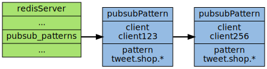
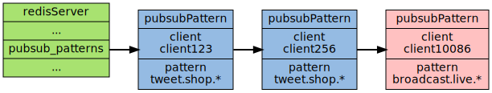

订阅与发布
Redis 通过 PUBLISH , SUBSCRIBE 等命令实现了 订阅与发布 模式， 这个功能提供两种信息机制， 分别是订阅/发布到频道和订阅/发布到模式， 接下来先讨论订阅/发布到频道的实现， 再讨论订阅/发布到模式的实现
频道
Redis 的 SUBSCRIBE 命令可以让客户端订阅任意数量的频道， 每当有新信息发送到被订阅的频道时， 信息就会被发送给所有订阅指定频道的客户端。作为例子， 下图展示了频道 channel1 ， 以及订阅这个频道的三个客户端 client2 , client5 和 client1 之间的关系：
当有新消息通过 PUBLISH 命令发送给频道 channel1 时， 这个消息就会被发送给订阅它的三个客户端：

接下来将探讨 SUBSCRIBE 和 PUBLISH 命令的实现， 以及这套订阅与发布机制的运作原理
订阅频道
每个 Redis 服务器进程都维持着一个表示服务器状态的 redis.h/redisServer 结构， 结构的 pubsub_channels 属性是一个字典， 这个字典就用于 保存 订阅频道 的信息：
struct redisServer { // ... dict *pubsub_channels; // ... };
其中，字典的键为 正在被订阅的频道 ， 而字典的值则是一个 链表 ， 链表中保存了 所有订阅这个频道的客户端 。比如说，在下图展示的这个 pubsub_channels 示例中， client2 , client5 和 client1 就订阅了 channel1 ， 而其他频道也分别被别的客户端所订阅：

当客户端调用 SUBSCRIBE 命令时， 程序就将客户端和要订阅的频道在 pubsub_channels 字典中关联起来。举个例子，如果客户端 client10086 执行命令 SUBSCRIBE channel1 channel2 channel3 ，那么前面展示的 pubsub_channels 将变成下面这个样子：
SUBSCRIBE 命令的行为可以用伪代码表示如下：
def SUBSCRIBE(client, channels): for channel in channels: # 遍历所有输入频道 redisServer.pubsub_channels[channel].append(client) # 将客户端添加到链表的末尾
通过 pubsub_channels 字典：
- 只要检查某个频道是否为字典的键， 就可以知道该频道是否正在被客户端订阅
- 只要取出某个键的值， 就可以得到所有订阅该频道的客户端的信息
发送消息到某个频道
了解了 pubsub_channels 字典的结构之后， 解释 PUBLISH 命令的实现就非常简单了
当调用 PUBLISH channel message 命令， 程序首先根据 channel 定位到字典的键， 然后将信息发送给字典值链表中的所有客户端。比如说，对于以下这个 pubsub_channels 实例， 如果某个客户端执行命令 PUBLISH channel1 "hello moto" ，那么 client2 、 client5 和 client1 三个客户端都将接收到 "hello moto" 信息：
PUBLISH 命令的实现可以用以下伪代码来描述：
def PUBLISH(channel, message): for client in server.pubsub_channels[channel]: # 遍历所有订阅频道 channel 的客户端 send_message(client, message) # 将信息发送给它们
退订频道
使用 UNSUBSCRIBE 命令可以 退订 指定的频道， 这个命令执行的是订阅的反操作： 它从 pubsub_channels 字典的给定频道（键）中， 删除 关于 当前客户端 的信息， 这样被退订频道的信息就不会再发送给这个客户端
模式
当使用 PUBLISH 命令发送信息到某个频道时， 不仅所有订阅该频道的客户端会收到信息， 如果有某个/某些 模式 和这个 频道 匹配 的话， 那么所有订阅这个/这些频道的客户端也同样会收到信息。下图展示了一个带有频道和模式的例子， 其中 tweet.shop.* 模式匹配了 tweet.shop.kindle 频道和 tweet.shop.ipad 频道， 并且有不同的客户端分别订阅它们三个：

当有信息发送到 tweet.shop.kindle 频道 时， 信息除了发送给 clientX 和 clientY 之外， 还会发送给订阅 tweet.shop.* 模式 的 client123 和 client256 ：

另一方面， 如果接收到信息的是频道 tweet.shop.ipad ， 那么 client123 和 client256 同样会收到信息：

订阅模式
redisServer.pubsub_patterns 属性是一个 链表 ，链表中保存着所有和 模式相关 的信息：
struct redisServer { // ... list *pubsub_patterns; // ... };
链表中的每个 节点 都包含一个 redis.h/pubsubPattern 结构 ：
typedef struct pubsubPattern { redisClient *client; robj *pattern; } pubsubPattern;
- client 属性：保存着 订阅模式的客户端
- pattern 属性：保存着 被订阅的模式
每当调用 PSUBSCRIBE 命令 订阅 一个 模式 时， 程序就 创建 一个包含 客户端信息 和 被订阅模式 的 pubsubPattern 结构 ， 并将该结构 添加 到 redisServer.pubsub_patterns 链表 中。作为例子，下图展示了一个包含两个模式的 pubsub_patterns 链表， 其中 client123 和 client256 都正在订阅 tweet.shop.* 模式：

如果这时客户端 client10086 执行 PSUBSCRIBE broadcast.list.* ， 那么 pubsub_patterns 链表 将被更新成这样：

通过 遍历 整个 pubsub_patterns 链表 ，程序可以 检查 所有 正在被订阅的模式 ，以及 订阅这些模式的客户端
发送信息到模式
发送信息到模式的工作也是由 PUBLISH 命令进行的， 在前面讲解频道的时候， 曾经给出了这样一段伪代码， 说它定义了 PUBLISH 命令的行为：
def PUBLISH(channel, message): for client in server.pubsub_channels[channel]: # 遍历所有订阅频道 channel 的客户端 send_message(client, message) # 将信息发送给它们
但是，这段伪代码并没有完整描述 PUBLISH 命令的行为， 因为 PUBLISH 除了将 message 发送到所有订阅 channel 的客户端之外， 它还会将 channel 和 pubsub_patterns 中的模式 进行对比， 如果 channel 和某个模式 匹配 的话， 那么也将 message 发送 到 订阅那个模式的客户端 。完整描述 PUBLISH 功能的伪代码定于如下：
def PUBLISH(channel, message): for client in server.pubsub_channels[channel]: # 遍历所有订阅频道 channel 的客户端 send_message(client, message) # 将信息发送给它们 for pattern, client in server.pubsub_patterns: # 取出所有模式，以及订阅模式的客户端 if match(channel, pattern): # 如果 channel 和模式匹配 send_message(client, message) # 那么也将信息发给订阅这个模式的客户端
举个例子，如果 Redis 服务器的 pubsub_patterns 状态如下：
那么当某个客户端发送信息 "Amazon Kindle, $69." 到 tweet.shop.kindle 频道 时， 除了所有订阅了 tweet.shop.kindle 频道的客户端会收到信息之外， 客户端 client123 和 client256 也同样会收到信息， 因为这两个客户端订阅的 tweet.shop.* 模式 和 tweet.shop.kindle 频道 匹配
退订模式
使用 PUNSUBSCRIBE 命令可以 退订 指定的 模式 ：删除 redisServer.pubsub_patterns 链表 中， 所有和被退订模式相关联的 pubsubPattern 结构 ， 这样客户端就不会再收到和模式相匹配的频道发来的信息
小结
- 订阅信息由服务器进程维持的 redisServer.pubsub_channels 字典保存
- 字典的键为被订阅的频道
- 字典的值为订阅频道的所有客户端
- 当有新消息发送到频道时，程序遍历频道（键）所对应的（值）所有客户端，然后将消息发送到所有订阅频道的客户端上
- 订阅模式的信息由服务器进程维持的 redisServer.pubsub_patterns 链表保存，链表的每个节点都保存着一个 pubsubPattern 结构
- 结构中保存着被订阅的模式，以及订阅该模式的客户端
- 程序通过遍历链表来查找某个频道是否和某个模式匹配
- 当有新消息发送到频道时，除了订阅频道的客户端会收到消息之外，所有订阅了匹配频道的模式的客户端，也同样会收到消息
退订频道和退订模式分别是订阅频道和订阅模式的反操作
Next：慢查询日志 Previous：事务 Home：功能实现